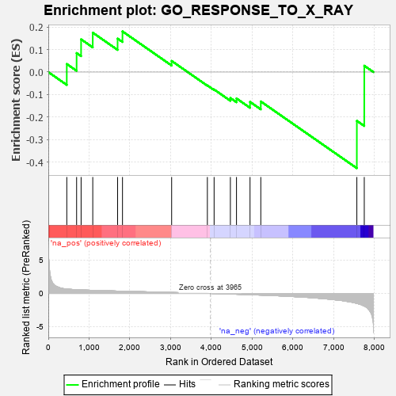

| | | Dataset | 7d |
| Phenotype | NoPhenotypeAvailable |
| Upregulated in class | na_neg |
| GeneSet | GO_RESPONSE_TO_X_RAY |
| Enrichment Score (ES) | -0.42607436 |
| Normalized Enrichment Score (NES) | -1.0114362 |
| Nominal p-value | 0.47226173 |
| FDR q-value | 0.8568715 |
| FWER p-Value | 1.0 |
Table: GSEA Results Summary

Fig 1: Enrichment plot: GO_RESPONSE_TO_X_RAY
Profile of the Running ES Score & Positions of GeneSet Members on the Rank Ordered List
| PROBE | GENE SYMBOL | GENE_TITLE | RANK IN GENE LIST | RANK METRIC SCORE | RUNNING ES | CORE ENRICHMENT | | 1 | ERCC1 | | | 453 | 0.660 | 0.0357 | No |
| 2 | XRCC6 | | | 694 | 0.560 | 0.0842 | No |
| 3 | BLM | | | 804 | 0.531 | 0.1451 | No |
| 4 | RAD51 | | | 1090 | 0.466 | 0.1747 | No |
| 5 | ERCC8 | | | 1699 | 0.357 | 0.1484 | No |
| 6 | MSH2 | | | 1819 | 0.334 | 0.1802 | No |
| 7 | BRCA2 | | | 3024 | 0.146 | 0.0494 | No |
| 8 | NIPBL | | | 3900 | 0.010 | -0.0592 | No |
| 9 | SFRP2 | | | 4065 | -0.018 | -0.0772 | No |
| 10 | ERCC6 | | | 4464 | -0.087 | -0.1150 | No |
| 11 | GATA3 | | | 4614 | -0.120 | -0.1168 | No |
| 12 | XRCC5 | | | 4946 | -0.187 | -0.1322 | No |
| 13 | ATM | | | 5210 | -0.249 | -0.1302 | No |
| 14 | XRRA1 | | | 7565 | -1.496 | -0.2161 | Yes |
| 15 | CASP3 | | | 7747 | -1.902 | 0.0282 | Yes |
Table: GSEA details [plain text format]
Fig 2: GO_RESPONSE_TO_X_RAY: Random ES distribution
Gene set null distribution of ES for GO_RESPONSE_TO_X_RAY